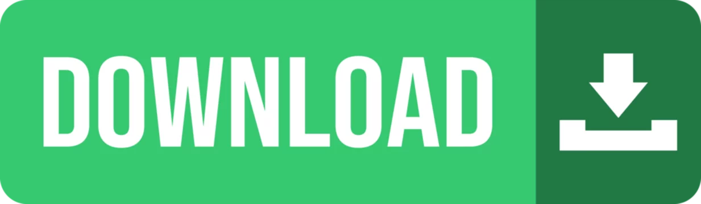

Se possível, usar o dispositivo na horizontal.
Os programas atuais atualizam de 30 em 30min.
Se quiseres parar uma rádio, clica no MUTE, em vez do PAUSE. Assim tens sempre a transmissão em direto.
Eu obtive os links para as streams dos canais através deste link que pode ser inserido no Kodi ou IPTV Smarters.
Para veres em stream direto, podes ver pelo meu site, ou por este ficheiro seguinte, que pode ser baixado e, de seguida, aberto no VLC.

Tenho um portfólio pessoal, para o verificar, clica aqui.
Também me podes contactar por este formulário aqui: